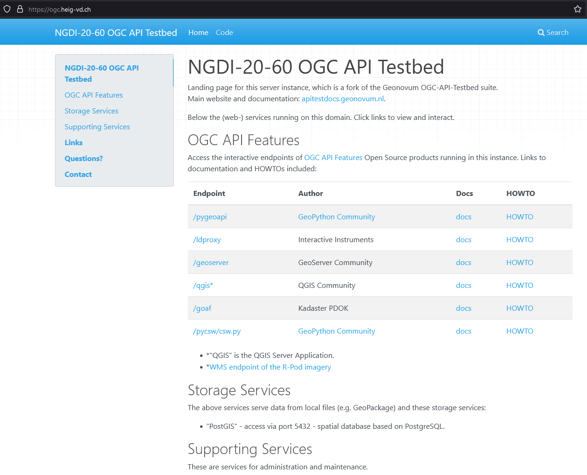

/* @title Espace réservé aux eaux (ERE)
* @abstract Modèle de représentation pour
l'espace réservé aux eaux de surface,
cours d'eau latéraux et plans d'eau */
* {
/* @title ERE */
[obligation = 1] {
fill: #ddebf7;
stroke: #ffcc00;
stroke-width: 6px;
}
;
/* @title Renonciation */
[obligation = 0 ] {
stroke:#ffcc00;
stroke-width: 4px;
stroke-dasharray: 4 4;
}
;
}geostandards-INDG20-60
1. Summary
2. Introduction
2.1. Context
2.2. Fundamental questions
3. Methodology
Given the above general purpose, the intent is to develop knowledge and practice of these OGC API standards so as, for instance, to update guidelines of the instructions stated by eCH- 0056. More generally, how can the advances coming out from the OGC standardization process be integrated into the Swiss standardization process and even vice versa. The idea in this project is to setup a Testbed Platform to connect these two processes as illustrated by figure 1 by considering issues related to how requirements defined by stakeholders are handled by standardization works both sides. By running at each iteration a showcase on specific use cases with a set of standards to challenge, the Testbed Platform brings results as update guidelines (e.g. for eCH working groups in the field of geoinformation) and feedbacks (e.g. OGC Change Requests). In addition, such a vision can provide an opportunity for dissemination and training material creation (e.g. tutorials, workshops).
Several activities are to be carried out to feed and run such a platform, among them: requirements analysis with stakeholders, identification of underlying standards to challenge, subscription/following in the relevant standards working groups, definition of experimental cases and evaluation criteria, deployment and maintenance of software to run showcases, documentation and dissemination.
For this project, to be seen as a first iteration, the expected outcomes include both quantitative and qualitative results that will be compiled into practical e-government guidelines for the implementation of standards from the OGC API family. The selected mainstream topic for the showcase and the underlying experimental cases is about climate change. While not yet connected in a complex pilot study, each case represents some of the required components from sensors to portrayal. The study is organized in three parts to challenge standards with software related to: (1) sensors data (2) data discovery, access and portrayal (3) earth observation data.

Figure 1. Proposed vision to connect Swiss and OGC standardization processes through a Testbed Platform
In term of software, the idea is to offer a unique project entry point for the discovery, experimentation and analysis of the new OGC APIs. To develop the knowledge and practice required, openness is not only related to the standards evaluated, but also required for the software aspects of the Testbed platform. That’s why we identified the Geonovum OGC API Testbed tooling stack cite:[apitestbed] as a good base. It includes already open sourceopen-source packages and provides a detailed documentation available on GitHub. We deployed a project instance at https://ogc.heig-vd.ch/ (figure 2) which still needs to get populated with the underlying data and configured to serve everything required to run the experimental cases, from server to client sides. This solution will also be used to create tutorials in the style of the documentation proposed by Meteo Canada cite:[eccc-msc].

Figure 2. Landing page of the Testbed platform
This solution is expected to bring good visibility toward all actors concerned by the Swiss standardization process. It is to raise interest from government stakeholders, companies and universities, technical people or not, as a community in synergy when considering the advances at the OGC.
To test the experimental cases, FOSS4G implementations are deployed, especially server-side software with:
FROST : focusing on sensor observation standards
Geoserver : quite active in the implementation of a wide set of OGC API standards
ldproxy : focusing on OGC API Features as an adapter sitting in front of existing WFS services
pygeoapi : active in the implementation with the largest set of OGC API standards of the panel
QGIS Server : quite active community in Switzerland, implementing also an OGC API Features client
The choice of these solutions was made to cover all the standards to be challenged in this project as well as with the variety of programming languages of the most common OSGeo software, the ease of deployment and the quality of their documentation. Table 1 has been built by going over the OGC API landing page of each, in conformance with the Landing Page Requirements Class of the specification OGC API - Common - Part 1: Core (OGC, 2021a).
FROST | Geoserver | ldproxy | pygeoapi | QGIS Server | |
SensorThingsAPI | ✅ | ||||
Features | ✅ | ✅ | ✅ | ✅ | |
Maps | ✅ | ||||
Styles | ✅ | ||||
Tiles | ✅ | ||||
Coverages | ✅ | ✅ | |||
DGGS (draft) | ✅ | ||||
EDR | ✅ | ||||
Processes | ✅ | ||||
Records | ✅ |
4. From OWS to web architecture
4.1. OWS Common
4.2. OGC API Common
5. Data Encoding Standards
6. Data Access Standards
6.1. Introduction
6.2. Web Feature Service (WFS)
6.3. OGC API - Features
6.4. Web Coverage Service (WCS)
6.5. OGC API Coverages
6.6. OGC API - Environmental Data Retrieval (EDR)
6.7. Sensor Observation Service (SOS)
6.8. OGC SensorThings API
7. Processing Standards
7.1. Introduction
7.2. Web Processing Service (WPS)
7.3. OGC API - Processes
8. Visualization standards
8.1. Web Map Service (WMS)
8.2. OGC API Maps
8.3. Web Map Tile Service (WMTS)
8.4. OGC API Tiles
8.5. Styled Layer Descriptor (SLD)
8.6. Symbology Encoding (SE)
8.7. OGC API Styles
8.8. OGC Symbology Conceptual Model
9. Metadata & Catalogue Services Standards
9.1. Introduction
9.2. Catalog Services for the web (CSW)
9.3. Operations, Ressources
9.4. OGC API Records
9.5. Operations, Ressources
9.6. Spatio Temporal Asset Catalog
9.7. Operations, Ressources
10. Uses cases
10.1. Sensor Data Standards
In Switzerland there’s no official standard defined to share with geospatial interoperability located environmental observations. In fact, the eCH-0056 at section 6.14 Services de mesure et d’exploitation indicates the OGC SOS v2.0 :cite[ogc-sos] and the Sensor Planning Service (SPS) v2.0 :cite[ingo2011ogc] as reference standard but indicates that currently no directive or recommendation is in place. The SOS standard was initially released in 2012. It follows the classical OGC WxS services. It defines interfaces toward sensors (data producers) and users (data consumers) based on the Simple Object Access Protocol (SOAP). Data are encoded in Extensible Language Markup (XML) and are based on the OGC Observations and Measurements (O\&M) :cite[cox2011observations] to represent data and ONT the OGC SensorML :cite[bott2007opengis],:cite[robin2014ogc] to represent sensor description. The standard exposes two main requests for data producers: (1) RegisterSensor to add a procedure to the service by means of a SensorML description and (2) InsertObservation to inject a new observation using the O\&M. To interact with the users SOS offers three main requests: (1) GetCapabilities to conform with OGC commons and access metadata about the server, including how to generate requests and what parameters can be used; (2) DescribeSensor to access the information in SensorML of a specific procedure that generates the data; and (3) GetObservation to download data in O\&M format applying filters on sensors, location, time, observed properties and feature of interest. Due to the extra effort of Web Interfaces to parse and handle XMLs some SOS software like istSOS :cite[cannata2019performance] and 52North-SOS implementations started to develop their own JSON based API. To cope with this problem, in 2015 the OGC developed the SensorThings API (STA) version 1.0 :cite[ogc-sensorthings], which is not actually part of the OGC API but share most of the approaches, which are based on the use of RESTful services and JSON format. We can consider this standard as the evolution of the SOS toward the implementation of ready-to-consume services for Web user interfaces. The main difference in the data model (see figure below) is the conceptualization of Datastream which groups observations measuring the same observed property and produced by the same sensor and of Things which is a physical element that is integrated in the communication network (similarly to a Wireless Sensor Network node). STA offers a Representational state transfer (RESTful) API that permits to create, read, update, delete (CRUD) elements using the HTTPS verbs (POST, GET, PATCH, DELETE). Entities are accessed by IDs and URLs. URLs can be extended to interrelated elements and defined query parameters can be set.

Figure 4. SensorThings API data model OGC SensorThings API v1.0
Environmental Observations and Consuming Applications in Switzerland
Major Swiss authoritative national offices that manage monitoring network for environmental data are: (1) MeteoSwiss, the national meteorological office that collects weather information from the SwissMetNet that comprises about 160 automatic monitoring stations observing weather and climate variables and about 100 automatic precipitation stations :cite[suter2006swissmetnet]; (2) Federal Office for the Environment (FOEN) that use the hydrometric monitoring network composed by about 260 stations observing surface water levels and discharges :cite[schwanbeck2018reti]; and (3) Swiss Federal Institute for Forest, Snow and Landscape Research (SLF) that manage the IMIS (Intercantonal Measuring and Information System) network comprising 186 stations measuring snow, wind and other avalanche specific parameters. At the best knowledge of the authors, none of these offices uses any sensor related OGC standards and their Web application for data access are based on specific own non-standard solutions. In most of the cases, the Web application consists in a map with base layers served by OGC WxS services and a static vector layer of the stations localization (GeoJSON or KML) with owner defined metadata. Once a location is selected, the application, using the metadata, compose the URL that points to the observations stored in a static file (JSON, CSV or even PDF). For example, the FOEN exposes on the Web the location of monitored water temperatures as a static GeoJson (https://data.geo.admin.ch/ch.bafu.hydroweb-messstationen_temperatur/ch.bafu.hydroweb-messstationen_temperatur_de.json) with an id attribute, used to later access another static file in CSV (https://www.hydrodaten.admin.ch/lhg/az/dwh/csv/ BAFU_2167_Wassertemperatur1.csv) format and containing a series of Time-Value Pairs (TVP). Other similar examples can be found at https://meteolakes.ch and at https://meteoswiss.ch.
Testbed actions
The hydro-meteorological monitoring network of the Canton Ticino is currently managed using the Sensor Observation Service (SOS) standard :cite[ogc-sos]. It has been selected as representative of a practical implementation of basic data required for the climate change impact assessment pipeline. The network, which has a 40 years long time-series, is currently composed of 60 stations and 140 sensors observing precipitation, air temperature and humidity, water temperature, river height. Collected information is operationally used by the local administration to design and actuate water resources protection and allocation to guarantee a sustainable management of the resource and the natural environment while protecting from the impacts of extreme events like floods and droughts. The Sensor Things API operational applicability is evaluated by testing this standard to fulfil all the major in place daily practical operations like for example data quality management, data sharing with third parties, data collection from vendor specific sensors and data analyses and visualization. At this stage of the research, the FROST implementation of STA has been set up and the data migration scripts has been prepared and are processing the data migration that is not yet completed. Nevertheless, some preliminary considerations can be derived.
The first tested step is the migration of the SOS service to the STA service. To perform this operation a number of mapping and assumption has to be done and consequently a script has been implemented to automatically migrate data. The equivalent of registering a sensor in SOS is the creation of a Datastream (POST request) that includes connection with (1) a sensor, (2) an observed property and (3) a things with possibly the location. To do so you therefore need to either have the IDs of the three related elements to be used as a reference, creating them in advance if they do not exists, or include directly the elements in the payload. It is worth to be noted that in FROST, any included elements in the request, if not indicated as a reference, is going to be created regardless the existence of a perfectly equal element. This potentially lead to duplicated elements: think of a set of 10 self registering sensors that measure precipitation, at each registration they will create a new ObservedProperty resulting in 10 elements with the same name, definition and description, but with different ID. For this reason the script, register only once the different elements keeping track of the IDs and finally create the Thing. After that, the script can start collecting observations from SOS and injecting them on the STA using a POST request of Observations. In istSOS we can register multiple observations at once providing a swe:DataRecord and in FROST we can uses the CreateObservations using the DataArrays format. Nevertheless to stress the system observations are going to be inserted one by one. This operation make the data migration a slow process, so that the data migration rate is of 1,88 observations/second. For a 20 years long series of 10 minutes data that therefore has 1,051,200 observations this result in a migration time of 22,87 days. It worth to be noted that this rate is not affected by the data retrieval request to SOS since observations are retrieved in chunks of 7 days and only when in memory sequentially injected in a loop of POST requests. Another aspect to consider is that in istSOS you can register observations of multiple observed properties making use of the swe:DataArray and similarly in FROST using the Multidatastream extension that represents a complex observation type. While in istSOS you can retrieve the observations of one of the observedProperties in FROST you can retrieve them only as a complex observation. Finally, in general in STA the three elements have a very minimal set of required information, and in this sense remove part of the complexity of SOS. Nevertheless to cope with compatibility it allows to extend metadata with generic fields to be used discretionally by the user to store "text-like" objects (e.g.: JSON, XML). For example USGS :cite[usgsSTA] in the \textit{Property} field of the Things inserted specific information like monitoringLocationType or hydrologicUnit that are then used to access data. This makes the solution compliant with STA but this lead to loosing practical interoperability since each agency would use it with non defined metadata (what an hydrologicUnit means? where is its definition?). Future analyses will investigate the performance of Message Queuing Telemetry Transport (https://mqtt.org/) interface for data migration, the compatibility with data validation procedures and possible implications derived by its adoption.
10.2. From data discovery & access to portrayal
Background
In the context of data discovery, access and portrayal, the well-known OGC WxS standards WFS :cite[ogc-wfs], WMS :cite[], WMTS :cite[ogc-wmts] have been used for more than ten years and still widely in use. In association with these standards, styling aspects are defined by the standards SLD :cite[ogc-sld] \& SE :cite[ogc-se]. These are typically referenced by the eCH-0056 Geoservices Application Profile: WMS 1.3.0 (section 6.7), WMTS 1.0.0 (section 6.8), WFS 2.0 (section 6.9.2), WCS 2.0.1 (section 6.9.3), CSW 2.0.2 (section 6.10), SE 1.1.0 (section 6.11) and SLD 1.1.0 (section 6.12).
For this project part, we focus on standardisation work at the OGC related to discovery, data access to visualisation, as made available at https://ogcapi.ogc.org/ and according to their versioning mentioned by the table below. Indeed, the table describes the relationship between the considered OGC APIs and their current equivalents in the context of raster and vector related standards.
OGC API | Version | WxS fashioned |
OGC API Features | 1.0 | WFS |
OGC API Maps | 0.0.1 | WMS |
OGC API Styles | 1.0.0 | SLD |
OGC SymCore | 1.0 | SE |
OGC API Tiles | 0.0.4 | WMTS |
OGC API Records | 1.0.0 | CSW |
To test and analyze these standards and specifications, two experimental cases are setup:
with the use of Geoclimate :cite[Bocher2021], an open source geospatial toolbox that computes a set of urban climate parameters based on OpenStreetMap data. The intent is to publish these parameters with metadata, data and maps using the new OGC APIs :cite[ogc-api].
with the Swiss National geodata models that have been published by the Swiss Government as Minimal Geodata Models (MGM) :cite[mgm] using the Swiss INTERLIS modeling language. It is also mandatory for these models to provide styling and symbology instructions according to a spreadsheet-based model which can be obtained here for the following example.

Figure 5. Styling and symbology instructions according to a spreadsheet-based model (Area reserved for water MGM)
Such styling and symbology instructions described in spread- sheet may then be formatted according to an encoding in con- formance with SymCore extensions and encodings :cite[symcore]. The encoding example below uses GeoCSS :
Which allows to produce the following map :

Figure 6. Overview of the Area reserved for water portrayal using the above GeoCSS encoding for GeoServer
Regarding the publication of vector data using the OGC API Features standard, we can state that all software packages already support this standard :cite[ogc-api-feature-implementations]. Regarding the tiling of data sets, for a long time the existing WMTS standard has been largely used, but a standard for vector tiling has never been established up to now. A possible explanation for this lack of standardization is on the one hand the complexity of vector tiling (e.g. regarding the handling of attributes or projections), but on the other hand the success of the Mapbox Vector tiles specification :cite[mvt-spec] that have been widely adopted. The OGC API Tiles specification is on a conceptual level similar to the WMTS standard and defines the addressing and tiling of the data. One difference is that the OGC API Tiles specification allows for several formats (both vector and raster) to be computed. This way of defining tiles assures on the one hand the compatibility with existing WMTS services (i.e. allowing applications to easily integrate both existing WMTS layers with tiled vector layers), but also with the Mapbox Vector tiles specification. On the software side GeoServer already supports the OGC-API tiles specification rendering the formats jpg, png, GeoJSON, topojson and mapbox-vector-tile.
Concerning portrayal, we may notice two related aspects: about OGC API Styles, about OGC SymCore. Firstly, OGC API Styles is inline with the conceptual model for styles, style encodings and style metadata as documented in chapter 6 of the OGC Testbed-15: Encoding and Metadata Conceptual Model for Styles Engineering Report. Especially it states that a style may be made available in one or more so-called stylesheets. Moreover style metadata are made available through the API with general descriptive information about the style, structural information (e.g., layers and attributes), and so forth to allow users to discover and select existing styles for their data. Having several stylesheets available does not guarantee the same visualization of the cartographic result for the final user, because each stylesheet may be based on different models and encodings (e.g. SLD, Mapbox style, GeoCSS, etc). Nonetheless, it opens the possibility to make full use of the cartographic capabilities and richness of the various underlying symbology models.
Secondly, OGC SymCore pushes forward portrayal interoperability with the idea to standardize also the symbology part. The approach is so-called one conceptual model, many encodings, which means that many flavors of encodings are possible but each in conformance with a common conceptual rendering behavior of cartographic capabilities. The intent is that finally, independently of the compliant encoding used, the cartographic result will be the same for the final user.